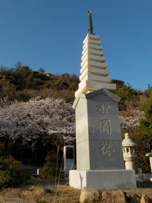
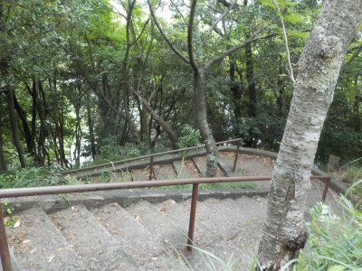
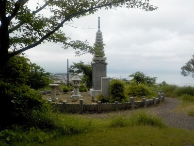
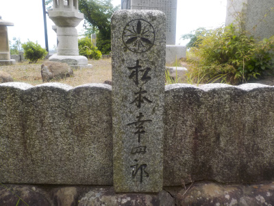
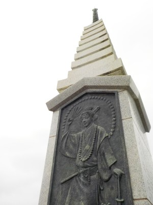

出雲阿国塔の桜が満開でした。
2023/03/28

塔の近くには桜の木が多く植えられているんですが、今日はそれらが満開でした。
花があるので、いつもよりなんとなく塔がキレイに見えました。
島根県出雲市大社町杵築北2948
2023/03/28

塔の近くには桜の木が多く植えられているんですが、今日はそれらが満開でした。
花があるので、いつもよりなんとなく塔がキレイに見えました。
2022/06/12

出雲阿国塔に行くには坂を登ります。

見晴らしのいい場所に出雲阿国塔がありました。ぐるっと石で囲んであったり塔篭があったりして、なんだかお墓みたいです。

塔の周りにある石には歌舞伎関係者の名前がありました。歌舞伎ファンの方が聖地巡礼で来るといいですね。

私は出雲市にこんな場所があるなんでグーグルマップを見るまで知りませんでした。出雲市民の何割の人がこのスポットを知っているんだろう？